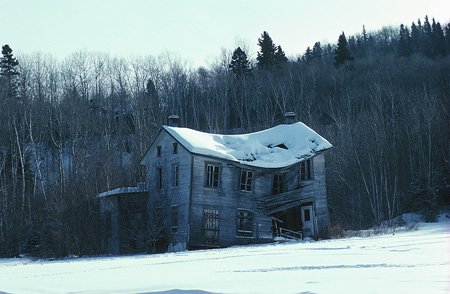
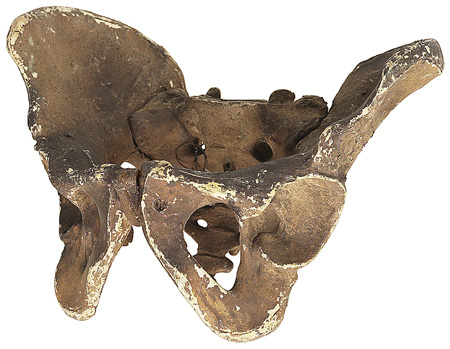

A group of teenagers accidentally found the fully clothed skeletal remains of an unknown adult in the cellar of an old, abandoned farmhouse. When police arrived at the scene, they found no identification on or near the body; however, the pink skirt and high heels found with the remains suggest that the victim was a female.
Old, Abandoned Farmhouse

Very little flesh was found with the skeletal remains of the victim. A forensic anthropologist noted that the orbits of the eyes of the victim were round and the supraorbital ridges of the forehead were slight. Other observations of the skull included that the base of the nasal area was flared and that the canine teeth were small. The pelvis was relatively wide and flat.
Example Photograph of Pelvis Found

The hyoid bone of the victim had numerous fractures within it, and several parry fractures were observed in both of the victim’s lower arm bones.
Several types of active beetle colonies were found upon the skeleton. No blowflies were present; however, numerous blowfly pupae membranes were found in the skull and in the anogenital area.